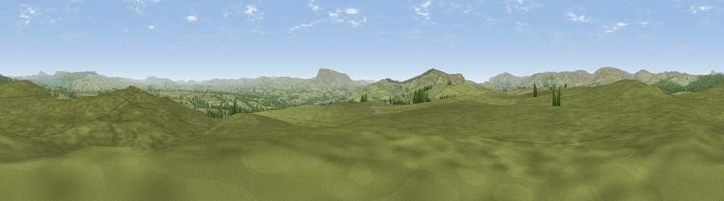

Viewpoint near Tosside
#9471 in England · top 19% of its area beats it · near TossideThe view, rendered

A 360° render of this exact spot computed from the terrain model, tree cover and land cover — summer colours, afternoon light, calibrated against photographs of famous viewpoints. Real trees, hedges and buildings will differ in detail.
The panorama
Grey silhouette: terrain skyline in each direction (720 bearings, Earth curvature and refraction included). Dashed green: skyline with trees (+15 m) and buildings (+8 m) as obstacles. Blue strip: how far the ground is visible on each bearing.
Where the view opens
Wedge length = distance to the farthest visible ground on that bearing (vegetation-aware). Rings at 10, 25 and 50 km.
What fills the view
94% grassland · 5% woodland
Angular shares of the visible panorama (visual magnitude), not map area. Landscape diversity 0.11 (0–1 Shannon).
Key numbers
More beautiful places nearby
The staircase of upgrades: each row has a higher view potential than everything closer. Driving times are estimates from straight-line distance, calibrated against real road routing — check an actual route before setting out.
| Place | Direction | Drive | Score |
|---|---|---|---|
| Viewpoint near Tosside | ENE · 0 km | ~1 min | 65.5 |
| Viewpoint near Tosside | N · 1 km | ~2 min | 66.2 |
| Beacon Hill | S · 5 km | ~11 min | 69.2 |
| Whelpstone Crag | N · 6 km | ~13 min | 71.7 |
| Viewpoint c9206_7443 | NNW · 8 km | ~17 min | 72.3 |
| Viewpoint c9212_7400 | NW · 10 km | ~19 min | 72.5 |
| Hailshowers Fell | NW · 10 km | ~19 min | 73.8 |
| Viewpoint near Downham | SSE · 12 km | ~22 min | 75.3 |
53.97319, -2.36319 · source: screening · position refined by local search. Computed location — check access rights before visiting.